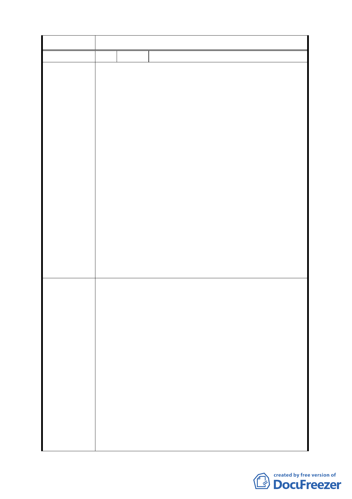

委員會決議 依市府（發展局）回應內容辦理。
編 號 11 陳情人 華固建設股份有限公司（聯絡人：蕭嘉銘）
一、 本區住商混合區規定供住宅使用樓層需退縮八米為
其牆面線，非供住宅使用需退縮五米為其牆面線，若
同基地（或不同基地）供住宅與非供住宅使用以分幢
設計，二種不同途之退縮距離不同，各基地規劃非供
住宅使用之樓層高度也不盡相同，已失去指定牆面線
之用意；且本區基地深度為三十米，於基地後側與住
宅區土地相鄰地界規定需退縮二米半作為無遮簷人
行道，若全基地以住宅設計（面前退八米、後側退二
米半）該區可供設計使用之深度僅剩十九米半，依其
陳情理由
限制本區完成建築物均是瘦瘦薄薄之建築，對於塑造
都市景觀及建築物風格有負面之影響。
二、 住商混合區使用用途以住宅為主，為維護住宅使用之
安全性應允許合理設置圍牆。
三、 本次變更允許「基隆河（中山橋至成美橋段）計畫案
（南段地區）」科技工業區（供倉儲使用）及科技工
業區 C 區設置土地及建築物使用組別第 55 組（公害
嚴重之工業），本區與相鄰之「內湖區新里族段羊稠
小段附近地區都市計畫案」均以住宅用地及學校用地
為主，嚴重影響居住品質及校園安全，應取消允許設
置該組別。
一、 比照「臺北市基隆河（中山橋至成美橋段）附近地區
細部計畫暨配合修定主要計畫案內『基隆河（中山橋
至成美橋段）附近地區』土地使用分區與都市設計管
制要點」及「臺北市基隆河成功橋上游截彎取直後兩
側土地細部計畫暨配合修訂主要計畫案」內土地使用
分區與都市設計管制要點計畫等修定案取消住商混
合區牆面線之限制，改以退縮四米無遮簷人行道取代
建議辦法
指定牆面線之規定；且可規定一樓以限制以非供住宅
使用並應留設騎樓，以符合設置供住商混合使用之規
劃原意，並提供民眾良好之通行空間（四米退縮加三
米六四騎樓地共有七米六四之通行空間）。
二、 建議取消住商混合區基地後側與住宅區土地相鄰地
界規定需退縮二米半作為無遮簷人行道之規定，因本
區街廓規模不大，應鼓勵大基地開發，過度分割無助
於都市景觀之塑造；且相對於停車需求，基地過小除
需採用機械設備外，也造成開挖深度加速造成基地保
14